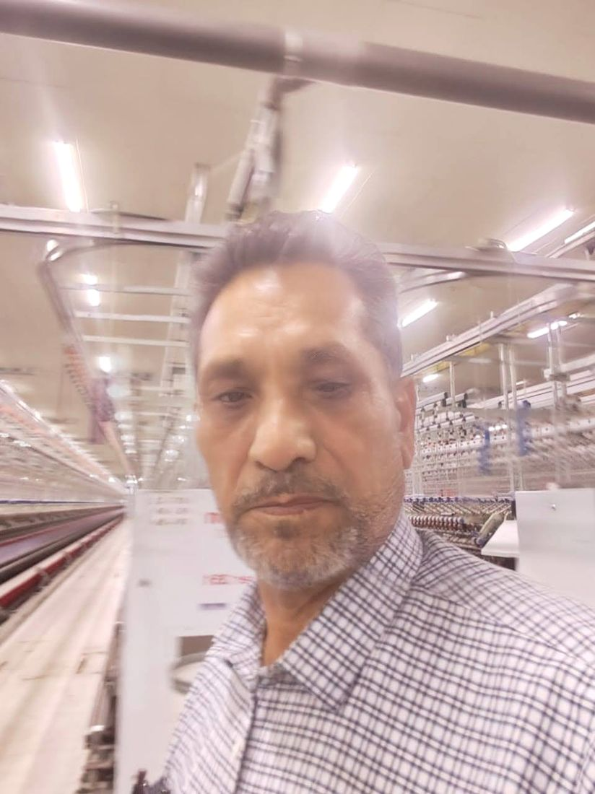

Before
The apprenticeship
His working life began on the open-end spinning floors of Karachi. From there he studied every machine in the spinning line: how it runs, how it fails, and how it is put right.
Har machine ko andar se samjha.